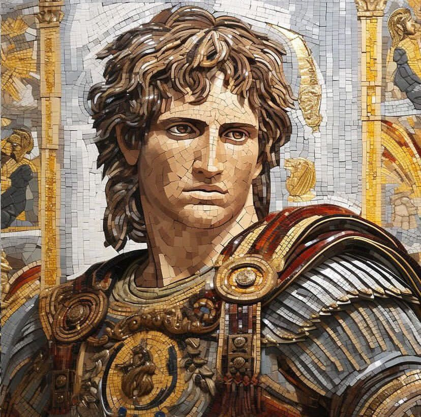

İskender
İskender (Grekçe: Αλέξανδρος Γʹ ὁ Μακεδών, Aleksandros III ho Makedon; MÖ 20 Temmuz 356 – MÖ 10-11 Haziran 323), asıl adıyla III. Aleksandros veya yaygın adıyla Büyük İskender, Yunan Antik Makedonya Krallığı'nın MÖ 336–323 yılları arasındaki kralıdır.MÖ 356 yılında Pella'da doğdu ve 20 yaşında babası II. Filip'in yerine tahta geçti. İktidarının uzun yıllarını Güneybatı Asya ve Kuzeydoğu Afrika'da eşi benzeri görülmemiş büyük askerî seferlerle geçirdi ve 30 yaşına geldiğinde Yunanistan'dan Kuzeybatı Hindistan'a kadar uzanan antik dünyanın en büyük imparatorluklarından birini oluşturdu.Hükümdarlığı süresince girdiği hiçbir muharebede yenilmeyen Büyük İskender, pek çok uzman kişi tarafından tarihin en başarılı askerî komutanlarından birisi olarak kabul edilir.
İskender, gençliğinde 16 yaşına kadar ünlü filozof Aristoteles tarafından eğitim gördü. MÖ 336'da, babası II. Filip'in bir suikaste uğrayıp ölmesinden sonra, babasının yerine Makedonya tahtına geçti. İskender, ''Yunanistan'ın Lideri'' unvanıyla ödüllendirildi ve bu yetkiyi, babasının Perslerin fethi için Yunanları bir araya getirmeyi amaçlayan Pan-Helenistik tasarısını hayata geçirmek için kullandı.

MÖ 334'te Ahameniş İmparatorluğu'nu ele geçiren İskender, bundan sonra 10 yıl sürecek olan bir dizi sefere başladı. Anadolu'nun fethine müteakiben İskender, bir dizi belirleyici savaştan sonra, özellikle İssos ve Gaugamela muharebelerinde Ahameniş hükümdarı III. Darius'u perişan etti. Daha sonra Pers Kralı III. Darius'u devirdi ve Ahameniş İmparatorluğu'nu tamamen fethetti. Gelinen son noktada ise İskender'in imparatorluğu, Adriyatik Denizi'nden Beas Nehri'ne kadar uzanmaktaydı.
İskender, hayatı boyunca "Dünyanın sonu''na ve ''Büyük Dış Deniz"e ulaşmak için çok uğraştı ve MÖ 326'da, Hydaspes Muharabesi'nde Pauravas'a karşı önemli bir zafer kazanarak Hindistan'ı işgal etti. Sonrasında, vatan hasreti çeken birliklerinin yoğun talepleri üzerine geri döndü ve MÖ 323'te, başkent olarak ilan etmeyi planladığı Babil'de, Arabistan'ın işgalini tasarladığı seferlerini hayata geçiremeden hastalandı ve öldü. Cenaze korteji, komutanlarından biri olan Ptolemaios tarafından kaçırılıp Mısır'daki İskenderiye'ye götürüldü. Daha sonra Jül Sezar tarafından da ziyaret edilen mezarı günümüzde kayıptır
İskender'in ölümünü takip eden yıllarda, İskender'in hayatta kalan generalleri ve varisleri olan Diadohoiler tarafından yapılan bir dizi iç savaş ve taht kavgaları, İskender'in kısa ömürlü büyük imparatorluğunun parçalanmasına neden oldu. Krallık; Makedonya, Ptolemaios Krallığı, Seleukos İmparatorluğu ve Pergamon Krallığı olmak üzere dört ana parçaya bölündü.
İskender, Yunan efsanelerini öğrenmiş ve kendinin yenilmez ve hatta ilahi birisi olduğuna inanmıştır. Seferleri sırasında kendi adını taşıyan 20 kadar şehir ve bölge kurdu. Birçoğunun adı günümüze kadar ulaşabilen bu yerleşimlerin en ünlüsü, Mısır'da bulunan İskenderiye'dir. Ayrıca Türkiye'nin Hatay ilinin sınırları içerisinde yer alan İskenderun ilçesi de buna örnek verilebilir.
İskender, Ahilleus gibi klasik bir kahraman olarak efsaneleşti ve hem Yunan hem de Yunan olmayan pek çok kültürün tarihinde ve efsanelerinde ön plana çıktı. Girdiği hiçbir savaşta mağlup olmamasından ötürü birçok askerî liderin kendilerini kıyasladıkları bir ölçü oldu. Dünya çapındaki askerî akademiler hâlâ taktiklerini öğretmektedir.Tarihteki en nüfuzlu kişilerden birisi olmuştur.Kuran'ın Kehf Suresi, 83-101. ayetlerinde doğuya ve batıya seyahat eden bir topluluk ile Ye'cüc ve Me'cüc arasına set çeken kimse olarak sunulan Zülkarneyn'in İskender olduğu düşünülür.